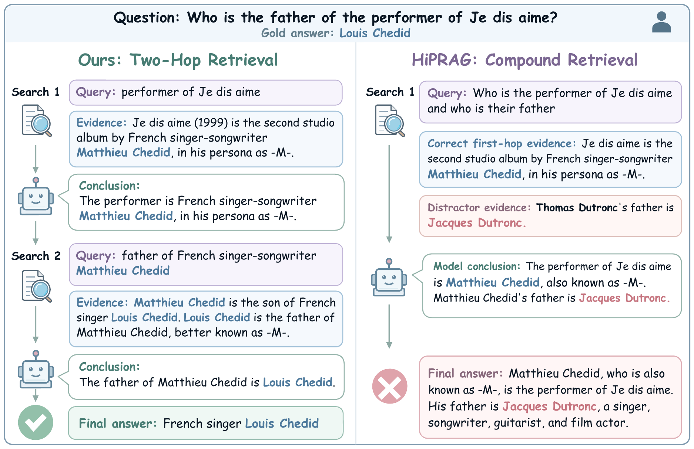

Proceed with current knowledge
A no-search step earns a positive score when its estimated reliability exceeds the backbone’s fixed calibration reference.
ReliSearch
arXiv preprint · October 2026Beijing Institute of Technology Beijing, China
* Corresponding author
Overview
A model can guess the right answer or look up a fact it already knows. In both cases, final-answer accuracy tells us little about whether the search decision was sound.
ReliSearch asks what the model could reliably conclude at each step, and how much a search improved that conclusion.
Efficient agentic search requires large language models (LLMs) to determine whether they can reliably proceed with their current knowledge or need additional external evidence. Supervision based on final-answer correctness or trajectory-level feedback evaluates realized trajectory performance. However, observed trajectory performance is jointly shaped by stochastic generation, retrieval quality, and downstream reasoning. Such signals therefore provide only indirect evidence of how reliable the current decision state was and how retrieved evidence changed its reliability. An effective reward should encourage search when external information is needed and favor searches that contribute to the answer. To this end, we propose a metacognitive framework for training LLMs to make search decisions based on the reliability of their intermediate reasoning states. Our framework estimates the reliability of local conclusions to distinguish whether the current information supports proceeding without search from how much retrieved evidence improves that reliability. The current-state reliability score assesses whether the model can proceed without search. The search-action score measures how retrieved evidence changes estimated reliability. Together, these scores define a reliability-aware process reward for Group Relative Policy Optimization (GRPO), providing finer-grained supervision for search and no-search behavior. Experiments across seven question-answering benchmarks demonstrate that our method achieves a better accuracy-efficiency trade-off than strong agentic-search baselines. Our code and model checkpoints will be open-sourced.

Method
During training, local probes sample alternative conclusions at each reasoning step. A calibration curve maps their uncertainty to an estimate of local accuracy.

A no-search step earns a positive score when its estimated reliability exceeds the backbone’s fixed calibration reference.
Two probes share the same reasoning and query. Their difference in reliability, with and without the returned passages, measures the value of the search.
Results
With Qwen2.5-7B, ReliSearch improves on HiPRAG’s answer accuracy across all seven benchmarks. In the controlled evaluation, the policy averages 1.64 searches per question, compared with HiPRAG’s 1.76.
| Method | Overall | NQ | TriviaQA | PopQA | HotpotQA | 2Wiki | MuSiQue | Bamboogle |
|---|---|---|---|---|---|---|---|---|
| Direct Inference | 31.5 | 27.0 | 26.8 | 40.1 | 58.7 | 16.0 | 7.9 | 15.9 |
| Standard RAG | 48.0 | 51.2 | 54.7 | 65.7 | 56.9 | 21.6 | 18.5 | 18.6 |
| IRCoT | 39.0 | 27.5 | 36.0 | 42.5 | 51.4 | 37.6 | 19.4 | 20.6 |
| Search-o1 | 48.1 | 40.2 | 42.2 | 58.5 | 56.1 | 45.6 | 15.1 | 19.3 |
| R1-Searcher | 61.2 | 60.0 | 73.0 | 58.2 | 60.4 | 60.3 | 32.9 | 55.8 |
| R1-Searcher++ | 62.8 | 61.0 | 73.5 | 59.0 | 64.2 | 63.2 | 32.3 | 58.7 |
| Search-R1 | 60.4 | 61.2 | 73.6 | 56.5 | 54.0 | 63.6 | 24.8 | 48.4 |
| β-GRPO | 62.4 | 65.0 | 75.0 | 60.0 | 53.0 | 66.0 | 24.0 | 52.0 |
| HiPRAG | 67.2 | 71.2 | 76.3 | 63.2 | 62.4 | 71.7 | 34.1 | 52.8 |
| ReliSearch | 69.3 | 74.3 | 77.7 | 66.8 | 66.1 | 71.8 | 35.2 | 58.4 |
| Method | Overall | NQ | TriviaQA | PopQA | HotpotQA | 2Wiki | MuSiQue | Bamboogle |
|---|---|---|---|---|---|---|---|---|
| Direct Inference | 0.00 | 0.00 | 0.00 | 0.00 | 0.00 | 0.00 | 0.00 | 0.00 |
| Standard RAG | 1.00 | 1.00 | 1.00 | 1.00 | 1.00 | 1.00 | 1.00 | 1.00 |
| IRCoT | 1.58 | 1.41 | 1.30 | 1.25 | 1.70 | 2.06 | 2.18 | 1.70 |
| Search-o1 | 1.16 | 1.08 | 1.08 | 1.04 | 1.26 | 1.27 | 1.44 | 1.38 |
| Search-R1 | 1.53 | 1.27 | 1.30 | 1.31 | 1.67 | 1.89 | 2.05 | 1.66 |
| R1-Searcher | 1.41 | 1.19 | 1.20 | 1.21 | 1.53 | 1.75 | 1.80 | 1.49 |
| Search Wisely | 1.83 | 1.36 | 1.55 | 1.65 | 1.94 | 2.26 | 2.36 | 2.02 |
| HiPRAG | 1.76 | 1.31 | 1.49 | 1.57 | 1.88 | 2.18 | 2.27 | 1.90 |
| ReliSearch | 1.64 | 1.09 | 1.20 | 1.21 | 1.91 | 2.38 | 2.43 | 1.94 |
Where the searches go. Relative to HiPRAG, ReliSearch makes 20.9% fewer searches on single-hop questions and 6.6% more on multi-hop questions.
Case study · MuSiQue
The first search identifies Matthieu Chedid as the performer of Je dis aime. A second, targeted query confirms that his father is Louis Chedid.
HiPRAG retrieves the right performer alongside a distractor, Thomas Dutronc, then assigns the distractor’s father to Chedid. Identifying the musician still leaves a family relationship to verify.

@misc{sun2026searchwhenneeded,
title = {Search When Needed, Proceed When Reliable: Metacognitive Reliability Supervision for Efficient Agentic Search},
author = {Minhao Sun and Zhijing Wu and Xian-Ling Mao},
year = {2026},
eprint = {2610.41738},
archivePrefix = {arXiv},
primaryClass = {cs.IR},
doi = {10.48550/arXiv.2610.41738},
url = {https://arxiv.org/abs/2610.41738}
}